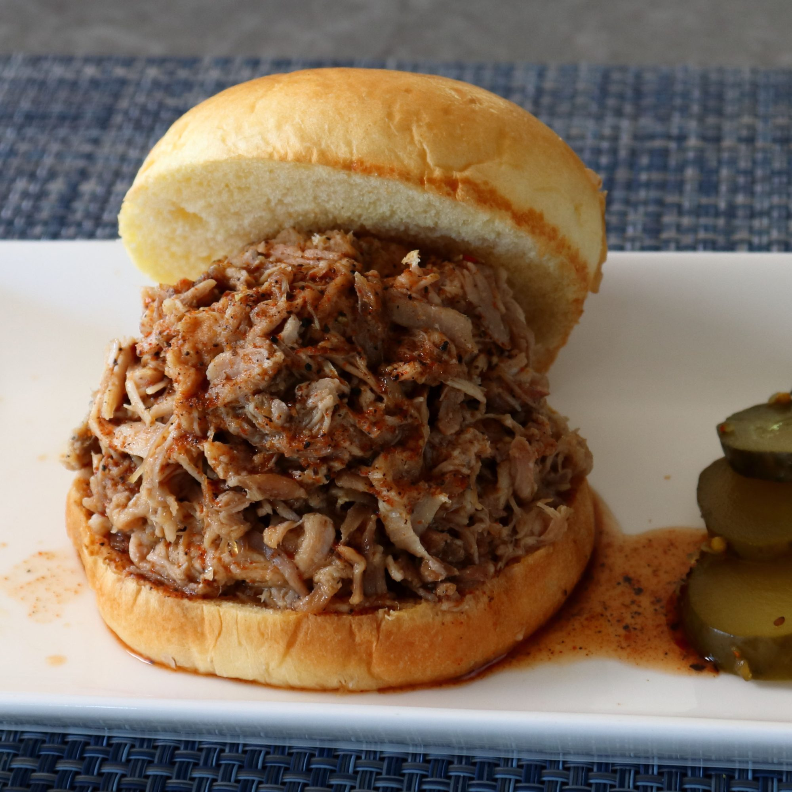

Carolina-Style "Whole Hog" Barbecue Pork

Description
- 2.5lb baby back pork ribs
- 1.75lb pork shoulder roast
- 1.25lb pork tenderloin, trimmed
- 1lb pork belly, skin removed
- 0.75lb pork sirloin roast
Steps
- Preheat the oven to 250 degrees F
- Cut ribs, pork shoulder, tenderloin, pork belly, and pork sirloin in half.
- Combine kosher salt, brown sugar, smoked salt, smoked paprika, black pepper, cumin, garlic powder, onion powder, and cayenne for dry rub in a small bowl with a spoon.
- Season cuts of meat on both sides with dry rub; reserve about 4 teaspoons of the rub to season the cooked pork if needed after tasting.
- Place a piece of heavy-duty foil on a sheet pan. Place a half of ribs down in the center of the foil; top with shoulder, tenderloin, pork belly, and sirloin. Top with other rib half. Wrap tightly in 3 more layers of foil. Transfer to a Dutch oven.
- Roast in the preheated oven until meat is falling off the bone and very, very tender, about 9 hours.
- Remove bones and pull/shred meat before serving. All or some of the rendered fat can be mixed into the meat.